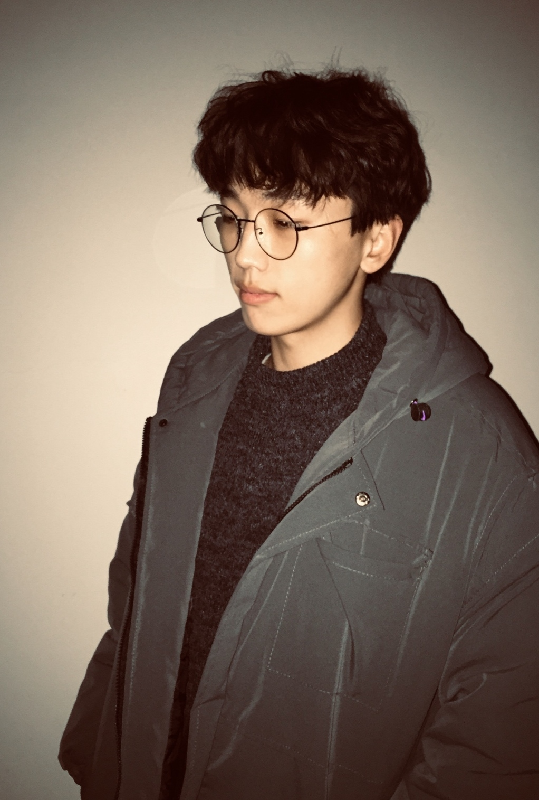

Peng Jiang
|
 |


Biography
I am a postgraduate student in School of Computer Science,Wuhan University (WHU) .
My research interests mainly lie in Deep Learning, Object Detection and Medical Image Analysis. I am currently studying on automatic cervical cancer screening.
Experiences
- 2020.09-Present Biod Lab, Wuhan University
Master student advised by Prof. Juan Liu. Topic: Automatic cervical cancer screening - 2021.05-2022.04 Wuhan Landing Medical Science Hi-Tech Co. Ltd. (Landing Med)
Research intern in AI group. Topic: Stitching and registration of whole slide image - 2018.03-2020.03 Parallel Computing and Visual Processing Lab, Northwest A&F University
Research assistant advised by Prof. Bin Liu. Topic: Detection of apple leaf diseases
Publications
- Classifying Cervical Histopathological Whole Slide Images via Deep Multi-Instance Transfer Learning and Support Vector Machine
Peng Jiang, Juan Liu, Lang Wang, Yuqi Chen, Chen Li, Dehua Cao, Baochuan Pang.
In submission to IEEE International Conference on Bioinformatics and Biomedicine (BIBM 2022). - Local-Global Vision Transformer for Breast Cancer Histopathological Image Classification
Lang Wang, Juan Liu, Peng Jiang, Lele Li, Wensi Duan, Yu Jin, Dehua Cao, Baochuan Pang.
In submission to IEEE International Conference on Bioinformatics and Biomedicine (BIBM 2022). - Predicting Tumor Mutation Burden of TNBC Based on Nuclei Scores of Histopathological Images
Yuqi Chen, Juan Liu, Peng Jiang, Yu Jin, Baochuan Pang.
In submission to IEEE International Conference on Bioinformatics and Biomedicine (BIBM 2022). - Channel Spatial Collaborative Attention Network for Fine-grained Classification of Cervical Cells
Peng Jiang, Juan Liu, Hua Chen, Cheng Li, Baochuan Pang, Dehua Cao.
International Conference on Neural Information Processing (ICONIP 2022). - A Novel IoMT System for Pathological Diagnosis based on Intelligent Mobile Scanner and Whole Slide Image Stitching Method
Peng Jiang, Juan Liu, Di Xiao, Baochuan Pang, Zongjie Hao, Dehua Cao.
International Conference on Intelligent Computing (ICIC 2022, Oral). - Real-Time Detection of Apple Leaf Diseases Using Deep Learning Approach Based on Improved Convolutional Neural Networks
Peng Jiang, Yuehan Chen, Bin Liu, Dongjian He, Chunquan Liang.
IEEE Access, 2019, ESI Highly Cited Paper.
Projects & Competitions
- 2019.11 Artificial Intelligence Creative Competition
Main member, China University Computer Competition, national 2nd prize - 2019.04 Image Group: Supernova discovery
Captain, 2019 Future Cup AI Challenge, 2nd place in northwest region - 2018.12 Problem B：Dynamic scheduling strategy of intelligent Rail Guide Vehicle
Main member, China Undergraduate Mathematical Contest in Modeling (CUMCM), 2nd prize in Shaanxi province
© Peng Jiang | Last updated: Sept. 2022